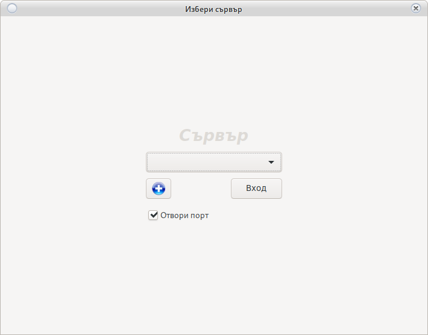

Промяна на казино
В случай на успешно свързване с последно избраното казино
От прозореца за вход се кликва на
Промени казино което ще отвори Фиг.1
При липса на връзка с последно избрано казино
Автоматично ще се отвори Фиг.1
`
Фиг.1

Ако обекта съществува се избира от падащото меню. От бутона + се добавя нов обект. Новия обект трябва да съдържа име на латиница (за разпознаване) и IP на обекта. Портовете на рутера в обекта трябва да са пренасочени към сървъра.
Отвори порт се слага в случай, че:
На сървъра има активирана защитна стена.
Не в необходима ако:
1. Се намирате в локална мрежа.
2. Ако защитната стена на сървъра е спряна.
3. Ако вече стената е отворена за съответния адрес.
В тези случаи опцията няма работи дори да е избрана.
Не се препоръчва спиране на защитната стена. При невъзможност използвайте Ban процеса. Пълното спиране на защитата може да предизвика неоторизиран достъп до информационната система.
Добавяне на ново казино
Добавяне на ново казино става от бутона от Фиг.1
Отваря се Фиг.2
Фиг.2
При някой операционни системи ще се наложи рестарт на програмата за да се покаже новия обект в менюто за избиране

Всичко полета са задължителни.
Името на обекта трябва да е:
- Написано на латиница
- Уникално без да се повтаря
- IP адреса на обекта трябва да е реален и статичен
- Портове 5432 и 30593 да са пренасочени към сървъра
- Препоръчително сервизен порт 44554 да е пренасочен
Съобщения
-
Няма връзка със сървъра (Ще се отвори Фиг.1):
-
Липсва интернет
-
Портовете са затворени
-
Грешно IP на обекта
-
Не е пусната функцията ОТВОРИ ПОРТ, връзката се блокира от защитната стена на сървъра.
-
Ако е пуснат BAN процес (може да ви бъде наложен бан за 24 или до отключване от администратор) Не се използва при работеща защитна стена. Препоръчително използване на защитна стена.
-
Сървърът не работи (свържете се с администратор)
-
-
Грешна дата и час
-
Датата и часът на работния компютър не отговаря на използваната от сървъра
-
Батерията на RTC модула е свършил и сверяване през интернет е неуспешно (При сигурна интернет връзка с рестарт на сървъра ще свери, дори и без работещ RTC модул)
-
-
Няма връзка с RTC (в случай, че пост терминала е настроен да се синхронизира със сървъра) (Ще се отвори Фиг.1)
-
Не e регистриран POS терминал. Погледнете регистриране на POS
-
Ревизията не отговаря на минимално зададена (Системата ще се ъпдейтва принудително от собственика и ще се рестартира програмата)
-
Невалиден базов лиценз (Програмата не е лицензирана или срока на лиценза е изтекъл. Свържете се с администратор)
-
Наближава изтичане на лиценз (Някой от лицензите е ще изтече в близките 10 дена. Свържете се с администратор)